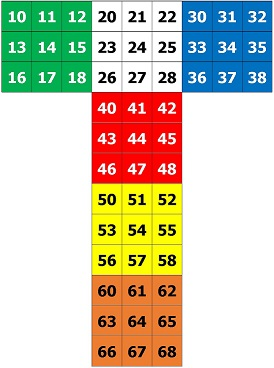
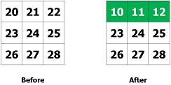
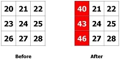
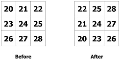
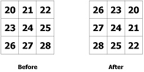

Rubik's Cube
Spring 2019: Question 16 (use C language to write this program)
The net of a rubik's cube looks like the following:  For the sake of clarity:
- The first number represents the side -- 1 for the first side, 2 for the second side, and so on.
- The second number represents the position of a square in the side. For each side, 0 represents the topleft most square, and 8 represents the bottomright most square.
A rubik's cube can be moved left (L), right (R), up (U), or down (D). A rubik's cube can also be rotated (C). Input format as shown below.
Movement examples:
- 0R: The row where square 0 resides (i.e. top row) is moved left. Resulting positions are as shown.
 - 0U: The column where square 0 resides (i.e. left column) is moved up. Resulting positions are as shown.

The rubik's cube can be rotated left or right.
- CL: Rotates the cube left.
 - CR: Rotates the cube right.

In this exercise, we will only look at side 2.
Input instructions:
- Input the movement commands based on the examples shown above.
- An input of -1 ends all input.
Output instruction: Once -1 is input, output the current positions of face 2 on the cube.
| Sample Input | Expected Output |
|---|---|
|
4R 8U 0D CL -1 |
42 45 48 21 14 27 60 63 66 |